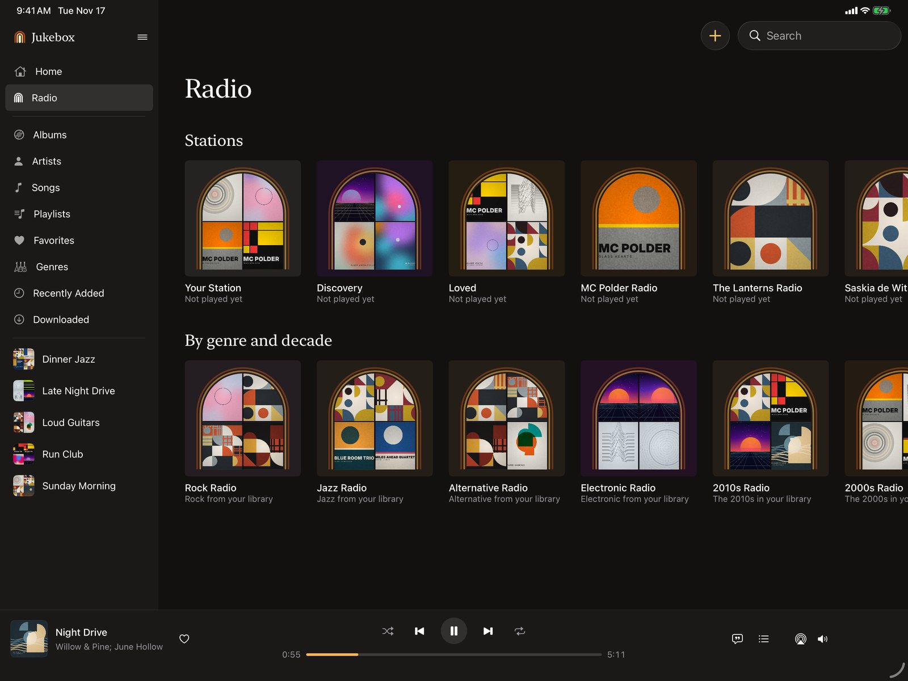
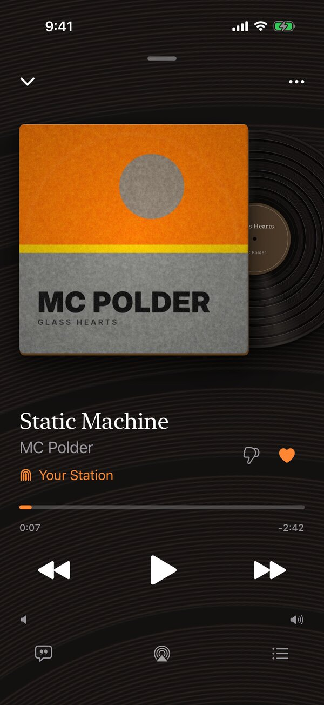

Jukebox
The music on your own server, on the iPhone, the iPad, the Mac and Linux. With a radio that plays on and learns from what you skip.


Your server, your records
Jellyfin, Emby, Plex, Navidrome and the other Subsonic servers. Keep a home server and a shared one, each with its own library, downloads and radio. Your Year comes from Jellyfin's Playback Reporting plugin when it is installed.
A radio that plays on
From any song, artist, album, genre or decade. Turn the dial from Familiar to Adventurous. It learns from what you skip.
Mixes made for you
Home makes up playlists from your own library, new every morning.
Goes on where it was
What plays on one device shows on the other. Leave the computer, and the phone carries on.
In the car
CarPlay with Home, Radio and the Library. Siri plays any album, artist, playlist or station by name.
At home on each
SwiftUI on the iPhone, the iPad and the Mac. GTK 4 and libadwaita on Linux. One Swift codebase under both.


Get it
Linux: the Flatpak or the AppImage from Releases, or build it yourself:
git clone https://github.com/simmmmm/Jukebox && cd Jukebox && dev/linux-install.sh
iPhone, iPad and Mac: free on the App Store.
The source is on GitHub.